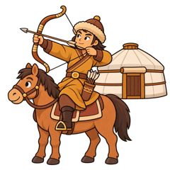
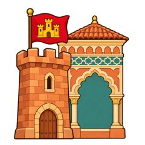

Как запомнить даты Средневековья
Памятка по истории Средних веков (V–XV вв.)
10 опорных дат
- 476 г. — падение Западной Римской империи, начало Средневековья
- 622 г. — переселение Мухаммеда в Медину, начало мусульманского летоисчисления
- 800 г. — образование империи Карла Великого
- 1054 г. — раскол Церкви на католическую и православную
- 1066 г. — Нормандское завоевание Англии
- 1096–1099 гг. — Первый крестовый поход
- 1215 г. — Великая хартия вольностей
- 1337 г. — начало Столетней войны
- 1453 г. — взятие Константинополя османами, гибель Византии
- 1492 г. — открытие Америки Колумбом
Остальные даты запоминай относительно них: раньше, позже, в том же веке.
Сначала век, потом год
Век запомнить легче, чем точный год: их всего одиннадцать — с V по XV. Даже если год забудется, век подскажет, что было раньше, а что позже, и уже половина ответа у тебя.
Век = первые цифры года + 1.
476 → V век (4 + 1). 1453 → XV век (14 + 1).
Исключение — круглые годы: 800 г. — это ещё VIII век, 1000 г. — ещё X век.
Цепочки-истории
Арабы
- 610 откровение Мухаммеду
- 622 Медина
- 632 смерть Мухаммеда
- 636 Ярмук
- 637 Иерусалим
- 652 Персия
- 732 Пуатье (франки остановили арабов)
- 1258 монголы взяли Багдад
Византия
- 527–565 Юстиниан
- 532–537 Святая София
- 1054 раскол Церкви
- 1071 Манцикерт
- 1204 крестоносцы взяли Константинополь
- 1261 восстановление
- 1453 гибель
Крестовые походы
- 1096–1099 Первый поход
- 1099 взятие Иерусалима
- 1202–1204 Четвёртый поход
- 1204 захват Константинополя
- 1291 потеря последних владений

Монголы- 1206 Чингисхан
- 1227 его смерть
- 1258 Багдад
- 1271 династия Юань
- 1279 конец Сун
- 1368 монголов свергли, династия Мин

Реконкиста- 718 Ковадонга (начало)
- 1212 Лас-Навас-де-Толоса (перелом)
- 1479 союз Кастилии и Арагона
- 1492 Гранада (конец)
Столетняя война
- 1337 начало
- 1346 Креси
- 1356 Пуатье
- 1415 Азенкур
- 1429 Орлеан
- 1431 Жанна д’Арк
- 1453 конец
Даты-близнецы
Два события в один год:
- 1000 — викинги доплыли до Америки и появилось Венгерское королевство.
- 1206 — Чингисхан и Делийский султанат в Индии.
- 1453 — пала Византия и закончилась Столетняя война.
- 1492 — закончилась Реконкиста и Колумб открыл Америку.
Ловушки
- Два Пуатье: 732 — франки против арабов, 1356 — битва Столетней войны.
- «Столетняя» война шла 116 лет: 1337–1453.
- Константинополь брали дважды: крестоносцы в 1204, османы в 1453.
- Викинги были в Америке в 1000 г. — почти на 500 лет раньше Колумба.
Тренажёр: https://fastest13.github.io/medieval-history/